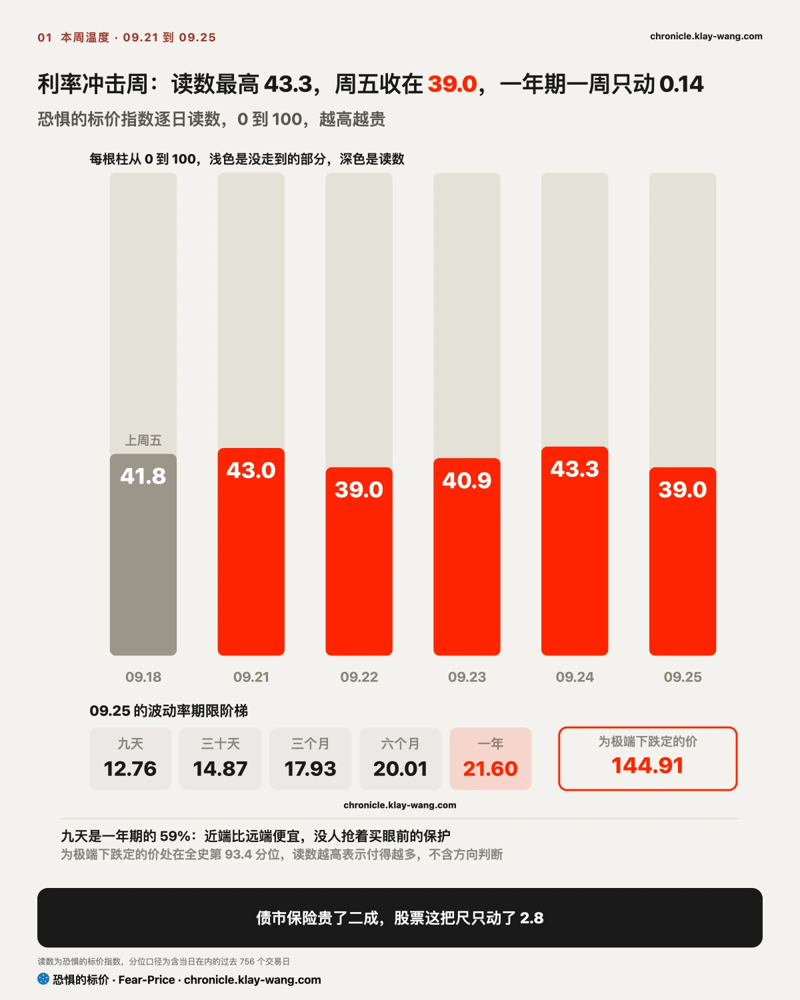
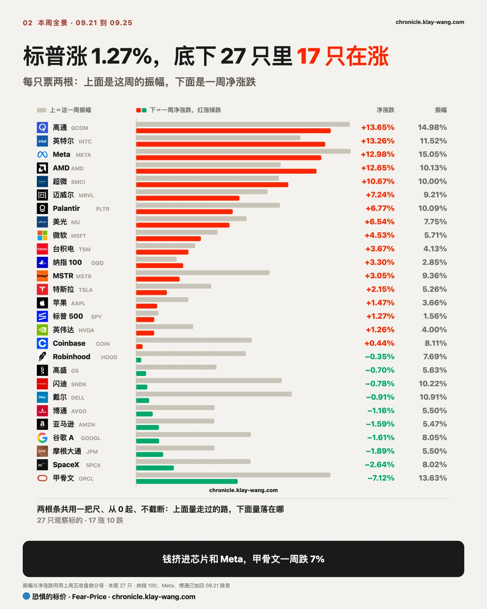
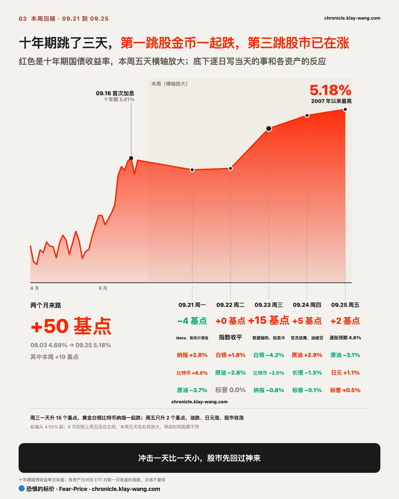
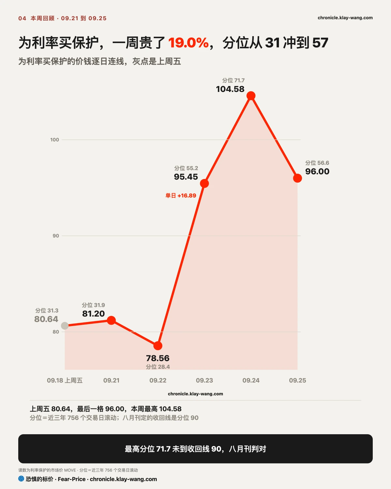
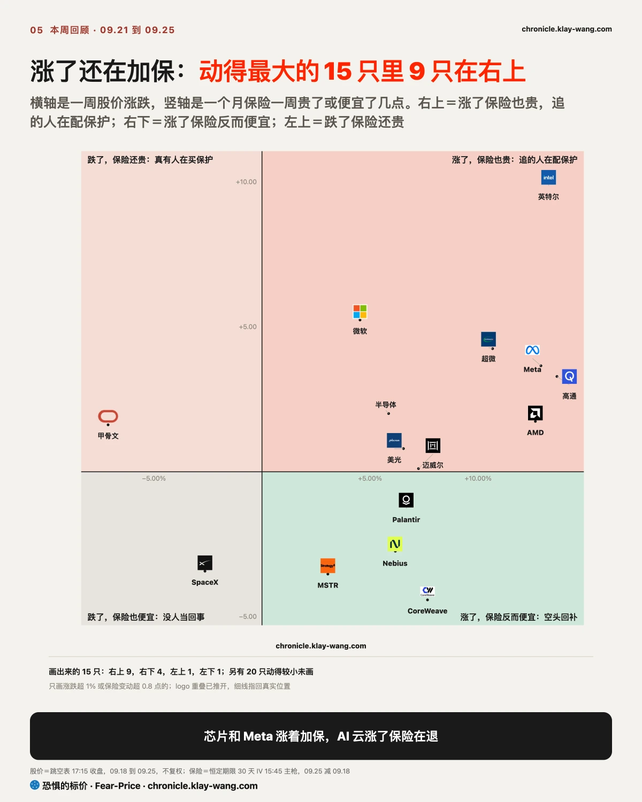
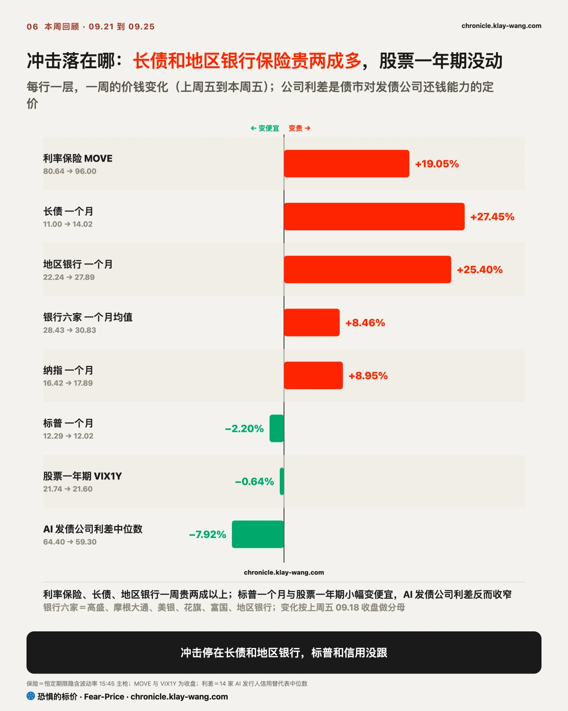
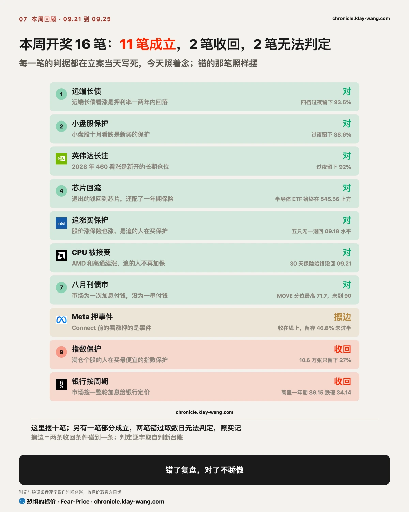

恐惧的标价指数（Fear-Price Index）· 2026-09-25 · 读数 39.0/100：一年期波动率 VIX1Y 为 21.60，处于近三年第 39.0 百分位，高即贵。逐日台账与口径 → chronicle.klay-wang.com · 转载注明：恐惧的标价指数 · Fear-Price
上周五 41.8，周四最高 43.3，周五 39.0。一年期波动率 VIX1Y 一周从 21.74 变成 21.60，只动了 0.14。十年期利率冲到 19 年新高的这一周，为股票买一年保护的价钱一点没涨，股市没有把这轮利率上行当成一年的风险。K 指数 2.488，高于上周五的 2.055。越接近 1，说明越多人把担忧落实到买保护上。恐贪读数一周从 30.4 回升到 37，仍偏向恐惧，为股票买一个月保护的价钱几乎没动，嘴上悲观、手上没付钱。按今天的恐贪读数，K 要跌破 1，VIX 需要升到 37 以上。历史在 chronicle.klay-wang.com/kindex，指数在 chronicle.klay-wang.com/fear-price。

标普一周涨 1.27%，等权标普却跌了 0.6%：平均一只票是跌的，指数的涨全靠少数大票。美银统计，七巨头加博通、AMD、美光已占美股权重约 41%，接近 1973、1989、2000 年几轮高点。更要紧的是，撑指数的正是保险在变贵的那几只大票，标普自己的一个月保险却便宜了 2%。指数看着稳，是因为波动被十几只票扛着；利率再冲一次、这几只一回吐，指数没有别的票能接。
跌得最多的是公用事业、能源、地产和金融。能源跟着油价走，另外三块对利率最敏感：公用事业和地产靠分红吸引人，利率一涨分红就比不过国债，银行手里的长期债券会跌价。最能说明问题的是黄金：市场要是担心通胀，黄金通常会涨，这周它却和长债、白银一起跌，美元在涨。这一周涨的主要是扣掉通胀以后借钱的价钱，不生利息、回本慢的资产都在让位给现金。你手里如果是高分红股或房地产信托，十年期回落之前，这层压力不会消失。


十年期一周从 5.00% 升到 5.18%，推手每天不同。周三是真实利率：制造业数据偏热、五年期国债拍卖需求偏弱，十年期一天升 15 个基点，其中八成来自扣除通胀后的真实利率，通胀预期几乎没动。周四是鹰派讲话、油价和日本国债：纽约联储主席称年底再加息一次合理，布伦特原油站上 100 美元，日本十年期创 1996 年以来新高。周五换成家庭的通胀预期：密歇根大学 9 月调查终值显示一年通胀预期升至 4.6%，为 6 月以来最高。三跳的冲击一天比一天小：周三股票、黄金、白银、比特币一起跌，周四长债跌 1.3%，股市和黄金只小跌，周五股市已经收涨。到了周五，推手换成家庭的通胀预期，这是更难退的一种：家庭的预期一旦抬起来，会变成要求加薪和提前消费，几个月都下不来。
利率保险跟着走了一个来回。MOVE 周二 78.56，周三 95.45，周四 104.58，周五回落到 96.00，一周贵了 19%。周五利率只升了 2 个基点，市场不再为下一次大跳付额外保护费。加息押注跟着抬升：对十月加息的定价一周内从不到五成升到七成，利率互换已把未来一年加息 75 个基点完全算进去。八月月刊定下的收回线是近三年第 90 百分位，本周最高只到 71.7，那条判断判对。


股票涨的时候，保险通常会跟着便宜。这周动得最大的 15 只里，有 9 只是涨着保险还在变贵，从微软的 4.5% 到高通的 13.7%，说明买期权的人在为更大的波动付钱，押继续大涨的和防着大跌的都在加码，现在追进去再配保护，成本已经不低。英特尔最极端：一周涨 13%，下个月的保险从周一起一直比一年期还贵，科技股里只有它。网上流传它 9 月 18 日收盘后有约 20 亿美元暗池大单、108 是支撑位，那批单子全按收盘价在盘后报出，那天是三巫日加季度指数调仓；美国金融业监管局的数据里，当天正常交易时段的场外成交只有两个月均值的九成，读不出有人在 108 吃货，下一个交易日它就跳空高开 7%，108 再没被碰过。反方向只有甲骨文：股价一周跌 7%，期权和信用两个市场同时给它加价，一个月保险变贵，信用利差扩大约 18 个基点，是 14 家 AI 发债公司里最多的；摩根士丹利认为，它对数据中心发出的不可抗力通知，让借债建 AI 机房的项目重新面对合同风险。想看英特尔每天的保险价和大单，可以点击 chronicle.klay-wang.com/t/INTC。
为利率买保护贵了 19%，长债一个月期保险贵了 27%，地区银行贵了 25%。纳指一个月期也贵了 9%，但标普一个月期反而便宜了 2%，股票一年期几乎没动。14 家 AI 相关发债公司的信用利差中位数，从 64.4 个基点收窄到 59.3，扩大最多的是甲骨文和英伟达，分别约 18 和 16 个基点。
信用利差是公司债比同期国债多付的利息，也就是债市给公司还钱能力开的价。利率冲到 19 年新高，这个价钱反而便宜了，说明债市担心的是利率本身，还没有担心企业还不上钱。
银行是例外，而且形状很特别。一个月期保险比一年期还贵的标的，上周五只有 3 只，全是银行；本周五变成 9 只，我们跟踪的五家大银行和地区银行基金全在里面，另外是长债、英特尔和医疗板块。短期保护比长期贵，说明买保护的人担心的是接下来几周。地区银行手里有大量长期债券，利率上升这些债券就跌价，2023 年硅谷银行出事走的就是这条路。
我的判断是，这轮冲击最先落地的会是地区银行，科技股和公司信用排在后面。如果 10 月 2 日前地区银行一个月期保险回落到一年期之下，或者 9 月 30 日前 AI 发债公司利差中位数升破 73.6 个基点，这个判断就要改写：前一种说明银行的担心退了，后一种说明冲击已经传到企业。美银策略师盯的是两条线同时破：MOVE 站上 125，全球金融股指数跌破 125。本周 MOVE 最高 104.58，周五 96，要再涨三成才到 125；两条要同时破，第一条就还远。

手里是标普 500 或纳指 100 ETF 的：这周 1 万美元的标普 500 ETF 赚了约 127 美元，纳指 100 ETF 赚了约 319 美元，同样的钱放在等权标普里亏了约 56 美元。标普 ETF 周五收 771.35，下方最大的看跌墙在 760，上方看涨墙在 785。想持续跟踪这两堵墙，可以点击 chronicle.klay-wang.com/t/SPY。
手里有 AI 和芯片股的：芯片基金一周涨 5.9%，1 万美元赚了约 586 美元。英伟达那张 2028 年押翻倍的看涨，第二天早上还留着 92%，是真仓位，长期的钱没被利率吓走。周五开始分化：卖设备的戴尔、超微盘中获承接，出租算力的 CoreWeave、Nebius、甲骨文缩量下跌。想看英伟达每天的大单和保险价，可以点击 chronicle.klay-wang.com/t/NVDA。
手里有美光、闪迪的：美光一周涨 6.5%，9 月 30 日发财报，它的一个月期保险落在自己一年里偏便宜的那一端（满分 100 只有 23），财报前买保护不算贵。闪迪的保险按绝对值排全表第五，跟它自己比却几乎贴着一年里最便宜的位置（只有 5）。我们 9 月 22 日、23 日各写了一条存储的判断，9 月 30 日、10 月 1 日开奖，对错都公开。想看美光的墙、保险价和我们立过的案，可以点击 chronicle.klay-wang.com/t/MU。
手里有银行股的：这周我们跟踪的五家大银行和地区银行基金，一个月期保护全部比一年期贵，地区银行一周贵了四分之一。股价跌得不多：四家一周跌不到 2%，花旗还涨了 1.9%，只有富国跌了 3.7%，担心主要体现在保护价钱上。
手里有长债或债券基金的：一周跌 2.4%，但周五保险已经开始退价。远端有资金押利率一两年内回落，押的是终点，路上的颠簸还在。
成立的里面，最硬的是三笔过夜留存：远端长债看涨留下 93.5%，小盘股十月看跌留下 88.6%，英伟达 2028 年看涨留下 92%，大单都是新开的仓位，没有当天进出。八月月刊那条也判对了。
收回两笔。一笔是 9 月 21 日写的指数保护，10.6 万张看跌只留下 27%，是当天进出的钱；另一笔是上周写的市场按一整轮加息给银行定价，高盛一年期保险跌破了自己定的收回线。Meta 押事件那笔擦边站住：股价收在线上，持仓留下 46.8%，差一点过半。另有一笔部分成立，两笔错过取数日无法判定，照实记。
